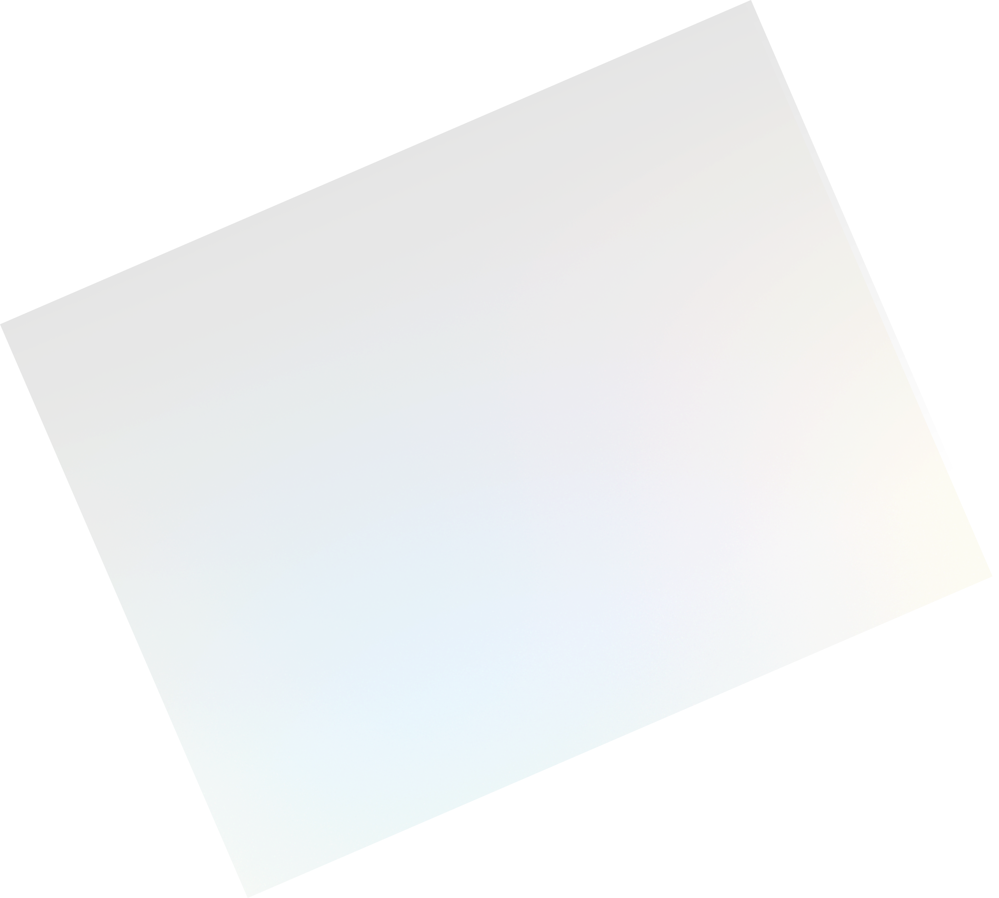
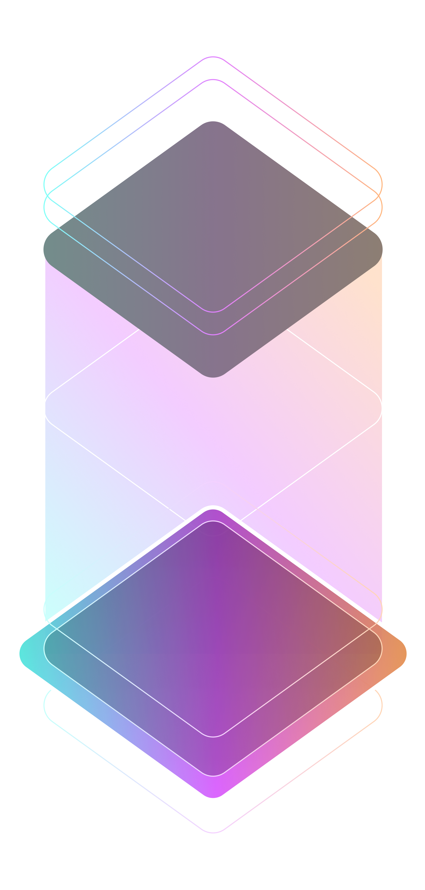
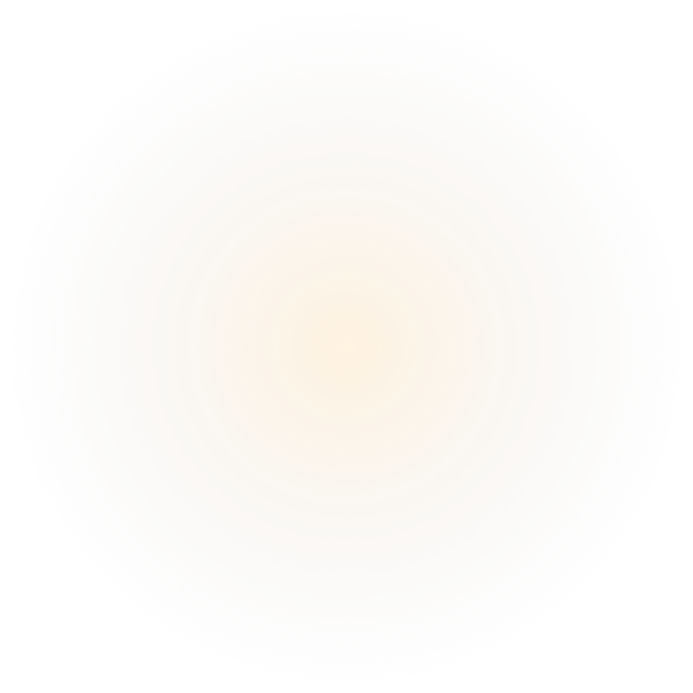

Home
About
How to study
Contact us
Color
Mastery
Testing
색상 조화와 정확성에 대한 감각을 테스트하고, 배우고, 개선할 수 있도록 설계된 반응형 컬러 테스트 플랫폼입니다.
사용자들은 다양한 테스트를 통해 RGB, CMYK, 색상 조합 등의 이론을 실제로 경험하며 재미있게 학습할 수 있습니다.
 
LET'S MASTER COLORS